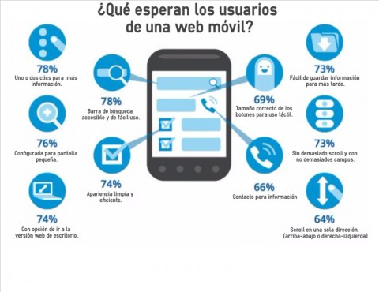

Los dispositivos móviles son herramientas tecnológicas diseñadas para facilitar la comunicación, el acceso a la información y la realización de múltiples actividades cotidianas. Su función principal es permitir que las personas se comuniquen de manera rápida y eficiente mediante llamadas telefónicas, mensajes de texto, correos electrónicos y aplicaciones de mensajería instantánea. Gracias a la conexión a internet, los usuarios pueden mantenerse en contacto con familiares, amigos, compañeros de estudio o trabajo sin importar la distancia. Además, los dispositivos móviles permiten el acceso a redes sociales, plataformas de videollamadas y servicios de comunicación en tiempo real, convirtiéndose en un medio fundamental para la interacción social en la actualidad.

Además de la comunicación, los dispositivos móviles desempeñan un papel importante en la educación, el trabajo y el entretenimiento. Estos equipos permiten acceder a bibliotecas virtuales, plataformas educativas, cursos en línea y una gran cantidad de recursos informativos que favorecen el aprendizaje. En el ámbito laboral, facilitan la creación y edición de documentos, la organización de tareas, la participación en reuniones virtuales y la gestión de proyectos desde cualquier lugar. Asimismo, ofrecen diversas opciones de entretenimiento, como escuchar música, ver películas y series, jugar videojuegos, leer libros digitales y utilizar aplicaciones recreativas. También incorporan herramientas útiles como cámaras fotográficas y de video, sistemas de navegación GPS, calendarios, calculadoras, relojes, alarmas y aplicaciones bancarias. Gracias a estas múltiples funciones, los dispositivos móviles se han convertido en elementos indispensables para la vida moderna, ya que permiten realizar numerosas actividades de forma rápida, cómoda y eficiente.